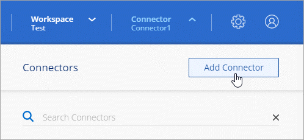

Solicitar cambios en el documento
Solicitar cambios en el documento Editar en GitHub
Editar en GitHub Guía del colaborador
Guía del colaboradorCrear un conector en Google Cloud desde BlueXP
Colaboradores
Un administrador de cuentas de BlueXP necesita implementar un Connector antes de poder utilizar la mayoría de las funciones de BlueXP. "Aprender cuando se necesita un conector". Connector permite que BlueXP gestione recursos y procesos dentro de su entorno de cloud público.
Esta página describe cómo crear un conector en Google Cloud directamente desde BlueXP. "Obtenga información sobre otras formas de desplegar un conector".
Estos pasos deben ser completados por un usuario que tenga la función de administrador de cuentas. Un administrador de área de trabajo no puede crear un conector.

|
Al crear su primer entorno de trabajo de Cloud Volumes ONTAP, BlueXP le solicitará que cree un conector si aún no lo tiene. |
Inicio rápido
Empiece rápidamente siguiendo estos pasos o desplácese hacia abajo hasta las secciones restantes para obtener todos los detalles.
 Configure los permisos
Configure los permisos-
Asegúrese de que su cuenta de Google Cloud tiene los permisos correctos creando y adjuntando una función personalizada.
-
Al crear el conector VM, debe asociarlo con una cuenta de servicio. Esta cuenta de servicio debe tener una función personalizada con permisos para gestionar recursos en Google Cloud.
-
Si va a implementar Cloud Volumes ONTAP en varios proyectos, asegúrese de que el conector tiene acceso a dichos proyectos.
-
Si utiliza un VPC compartido, configure los permisos en el proyecto de servicio y en el proyecto de host.
 Configure las redes
Configure las redesSe necesita un VPC y una subred con acceso de salida a Internet hacia extremos específicos. Si se requiere un servidor proxy para Internet de salida, necesitará la dirección IP, las credenciales y el certificado HTTPS.
 Habilite las API de Google Cloud
Habilite las API de Google Cloud-
API de Cloud Deployment Manager V2
-
API de registro en la nube
-
API de Cloud Resource Manager
-
API del motor de computación
-
API de gestión de acceso e identidad (IAM)
 Cree el conector
Cree el conectorHaga clic en el menú desplegable conector, seleccione Agregar conector y siga las indicaciones.
Configure los permisos
Se requieren permisos para lo siguiente:
-
El usuario que desplegará el conector VM
-
Una cuenta de servicio que necesita conectar a la máquina virtual del conector durante la implementación
Según la configuración existente, es posible que deba realizar también los siguientes pasos:
-
Configure permisos en todos los proyectos
-
Configurar permisos para un VPC compartido
Configure los permisos para desplegar el conector
Antes de implementar un conector, debe asegurarse de que su cuenta de Google Cloud tiene los permisos correctos.
-
"Crear una función personalizada" esto incluye los siguientes permisos:
title: Connector deployment policy description: Permissions for the user who deploys the Connector from BlueXP stage: GA includedPermissions: - compute.disks.create - compute.disks.get - compute.disks.list - compute.disks.setLabels - compute.disks.use - compute.firewalls.create - compute.firewalls.delete - compute.firewalls.get - compute.firewalls.list - compute.globalOperations.get - compute.images.get - compute.images.getFromFamily - compute.images.list - compute.images.useReadOnly - compute.instances.attachDisk - compute.instances.create - compute.instances.get - compute.instances.list - compute.instances.setDeletionProtection - compute.instances.setLabels - compute.instances.setMachineType - compute.instances.setMetadata - compute.instances.setTags - compute.instances.start - compute.instances.updateDisplayDevice - compute.machineTypes.get - compute.networks.get - compute.networks.list - compute.networks.updatePolicy - compute.projects.get - compute.regions.get - compute.regions.list - compute.subnetworks.get - compute.subnetworks.list - compute.zoneOperations.get - compute.zones.get - compute.zones.list - deploymentmanager.compositeTypes.get - deploymentmanager.compositeTypes.list - deploymentmanager.deployments.create - deploymentmanager.deployments.delete - deploymentmanager.deployments.get - deploymentmanager.deployments.list - deploymentmanager.manifests.get - deploymentmanager.manifests.list - deploymentmanager.operations.get - deploymentmanager.operations.list - deploymentmanager.resources.get - deploymentmanager.resources.list - deploymentmanager.typeProviders.get - deploymentmanager.typeProviders.list - deploymentmanager.types.get - deploymentmanager.types.list - resourcemanager.projects.get - compute.instances.setServiceAccount - iam.serviceAccounts.list -
Adjunte la función personalizada al usuario que implementará Connector desde BlueXP.
Ahora el usuario de Google Cloud tiene los permisos necesarios para crear el conector.
Configure una cuenta de servicio para el conector
Se requiere una cuenta de servicio para proporcionar al conector el permiso que necesita para gestionar recursos en Google Cloud. Asociará esta cuenta de servicio con el conector VM al crearla.
Los permisos para la cuenta de servicio son diferentes a los permisos que configuró en la sección anterior.
-
"Crear una función personalizada" esto incluye los siguientes permisos:
title: NetApp BlueXP description: Permissions for the service account associated with the Connector instance. stage: GA includedPermissions: - iam.serviceAccounts.actAs - compute.regionBackendServices.create - compute.regionBackendServices.get - compute.regionBackendServices.list - compute.networks.updatePolicy - compute.backendServices.create - compute.addresses.list - compute.disks.create - compute.disks.createSnapshot - compute.disks.delete - compute.disks.get - compute.disks.list - compute.disks.setLabels - compute.disks.use - compute.firewalls.create - compute.firewalls.delete - compute.firewalls.get - compute.firewalls.list - compute.globalOperations.get - compute.images.get - compute.images.getFromFamily - compute.images.list - compute.images.useReadOnly - compute.instances.addAccessConfig - compute.instances.attachDisk - compute.instances.create - compute.instances.delete - compute.instances.detachDisk - compute.instances.get - compute.instances.getSerialPortOutput - compute.instances.list - compute.instances.setDeletionProtection - compute.instances.setLabels - compute.instances.setMachineType - compute.instances.setMetadata - compute.instances.setTags - compute.instances.start - compute.instances.stop - compute.instances.updateDisplayDevice - compute.instanceGroups.get - compute.addresses.get - compute.instances.updateNetworkInterface - compute.machineTypes.get - compute.networks.get - compute.networks.list - compute.projects.get - compute.regions.get - compute.regions.list - compute.snapshots.create - compute.snapshots.delete - compute.snapshots.get - compute.snapshots.list - compute.snapshots.setLabels - compute.subnetworks.get - compute.subnetworks.list - compute.subnetworks.use - compute.subnetworks.useExternalIp - compute.zoneOperations.get - compute.zones.get - compute.zones.list - compute.instances.setServiceAccount - deploymentmanager.compositeTypes.get - deploymentmanager.compositeTypes.list - deploymentmanager.deployments.create - deploymentmanager.deployments.delete - deploymentmanager.deployments.get - deploymentmanager.deployments.list - deploymentmanager.manifests.get - deploymentmanager.manifests.list - deploymentmanager.operations.get - deploymentmanager.operations.list - deploymentmanager.resources.get - deploymentmanager.resources.list - deploymentmanager.typeProviders.get - deploymentmanager.typeProviders.list - deploymentmanager.types.get - deploymentmanager.types.list - logging.logEntries.list - logging.privateLogEntries.list - resourcemanager.projects.get - storage.buckets.create - storage.buckets.delete - storage.buckets.get - storage.buckets.list - cloudkms.cryptoKeyVersions.useToEncrypt - cloudkms.cryptoKeys.get - cloudkms.cryptoKeys.list - cloudkms.keyRings.list - storage.buckets.update - iam.serviceAccounts.getIamPolicy - iam.serviceAccounts.list - storage.objects.get - storage.objects.list - monitoring.timeSeries.list - storage.buckets.getIamPolicy - cloudkms.cryptoKeys.getIamPolicy - cloudkms.cryptoKeys.setIamPolicy - cloudkms.keyRings.get - cloudkms.keyRings.getIamPolicy - cloudkms.keyRings.setIamPolicy -
"Cree una cuenta de servicio de Google Cloud y aplique la función personalizada que acaba de crear".
-
Si desea poner en marcha Cloud Volumes ONTAP en otros proyectos, "Conceda acceso agregando la cuenta de servicio con la función BlueXP a ese proyecto". Deberá repetir este paso con cada proyecto.
Se ha configurado la cuenta de servicio del conector VM.
Configure permisos en todos los proyectos
Si planea implementar sistemas Cloud Volumes ONTAP en proyectos diferentes a los del proyecto en el que reside el conector, tendrá que proporcionar a la cuenta de servicio del conector acceso a dichos proyectos.
Por ejemplo, supongamos que el conector está en el proyecto 1 y que desea crear sistemas Cloud Volumes ONTAP en el proyecto 2. Tendrá que otorgar acceso a la cuenta de servicio en el proyecto 2.
-
En la consola de Google Cloud, vaya al servicio IAM y seleccione el proyecto en el que desea crear sistemas Cloud Volumes ONTAP.
-
En la página IAM, seleccione conceder acceso y proporcione la información necesaria.
-
Introduzca el correo electrónico de la cuenta de servicio del conector.
-
Seleccione el rol personalizado del conector.
-
Haga clic en Guardar.
-
Para obtener información detallada, consulte "Documentación de Google Cloud"
Configure los permisos VPC compartidos
Si se utiliza un VPC compartido para implementar recursos en un proyecto de servicio, se requieren los siguientes permisos. Esta tabla es de referencia y el entorno debe reflejar la tabla de permisos cuando se haya completado la configuración de IAM.
| Identidad | Creador | Alojadas en | Permisos de proyecto de servicio | Permisos del proyecto host | Específico |
|---|---|---|---|---|---|
Cuenta de Google utilizada para desplegar el conector |
Personalizado |
Proyecto de servicio |
|
Despliegue del conector en el proyecto de servicio |
|
Cuenta de servicio del conector |
Personalizado |
Proyecto de servicio |
|
Implementación y mantenimiento de Cloud Volumes ONTAP y servicios en el proyecto de servicio |
|
Cuenta de servicio de Cloud Volumes ONTAP |
Personalizado |
Proyecto de servicio |
|
N.A. |
(Opcional) para la organización en niveles de datos y Cloud Backup |
Agente de servicio de API de Google |
Google Cloud |
Proyecto de servicio |
|
|
Interactúa con las API de Google Cloud en nombre de la implementación. Permite a BlueXP utilizar la red compartida. |
Cuenta de servicio predeterminada de Google Compute Engine |
Google Cloud |
Proyecto de servicio |
|
|
Pone en marcha instancias de Google Cloud e infraestructura de computación en nombre de la puesta en marcha. Permite a BlueXP utilizar la red compartida. |
Notas:
-
deploymentmanager.editor sólo es necesario en el proyecto host si no pasa reglas de firewall a la implementación y decide dejar que BlueXP las cree por usted. BlueXP creará una implementación en el proyecto host que contiene la regla de firewall VPC0 si no se especifica ninguna regla.
-
Firewall.create y firewall.delete sólo son necesarios si no está pasando reglas de firewall a la implementación y está eligiendo permitir que BlueXP las cree para usted. Estos permisos residen en el archivo .yaml de cuenta de BlueXP. Si va a implementar un par de alta disponibilidad mediante un VPC compartido, estos permisos se utilizarán para crear las reglas de firewall para VPC1, 2 y 3. Para todas las demás implementaciones, estos permisos también se utilizarán para crear reglas para VPC0.
-
Para la organización en niveles de los datos, la cuenta del servicio de organización en niveles debe tener el rol serviceAccount.user en la cuenta de servicio, no solo en el nivel del proyecto. Actualmente, si asigna serviceAccount.user en el nivel de proyecto, los permisos no se muestran cuando consulta la cuenta de servicio con getIAMPolicy.
Configure las redes
Configure su red de modo que Connector pueda gestionar recursos y procesos en su entorno de cloud público. Además de tener una red virtual y una subred para el conector, deberá asegurarse de que se cumplen los siguientes requisitos.
Conexión a redes de destino
Un conector requiere una conexión de red al tipo de entorno de trabajo que está creando y a los servicios que tiene previsto habilitar.
Por ejemplo, si instala un conector en su red corporativa, debe configurar una conexión VPN a la red virtual en la que inicie Cloud Volumes ONTAP.
Acceso a Internet de salida
El conector requiere acceso saliente a Internet para gestionar recursos y procesos dentro de su entorno de nube pública.
| Puntos finales | Específico | ||
|---|---|---|---|
https://www.googleapis.com/compute/v1/ https://cloudresourcemanager.googleapis.com/v1/projects https://www.googleapis.com/compute/beta https://storage.googleapis.com/storage/v1 https://www.googleapis.com/storage/v1 https://iam.googleapis.com/v1 https://cloudkms.googleapis.com/v1 https://www.googleapis.com/deploymentmanager/v2/projects |
Para gestionar recursos en Google Cloud. |
||
https://support.netapp.com |
Para obtener información sobre licencias y enviar mensajes de AutoSupport al soporte de NetApp. |
||
https://*.api.bluexp.netapp.com https://api.bluexp.netapp.com https://*.cloudmanager.cloud.netapp.com https://cloudmanager.cloud.netapp.com |
Proporcionar funciones y servicios SaaS dentro de BlueXP.
|
||
https://cloudmanagerinfraprod.azurecr.io https://*.blob.core.windows.net |
Para actualizar el conector y sus componentes de Docker. |

Servidor proxy
Si su organización requiere la implementación de un servidor proxy para todo el tráfico saliente de Internet, obtenga la siguiente información acerca del proxy HTTP o HTTPS:
-
Dirección IP
-
Credenciales
-
Certificado HTTPS
Grupo de seguridad
No hay tráfico entrante en el conector, a menos que lo inicie o si el conector se utiliza como proxy para los mensajes AutoSupport. HTTP y HTTPS proporcionan acceso al "Interfaz de usuario local", que utilizará en raras circunstancias. SSH solo es necesario si necesita conectarse al host para la solución de problemas.
Limitación de dirección IP
Puede haber un conflicto con las direcciones IP en el rango 172. "Obtenga más información sobre esta limitación".
Habilite las API de Google Cloud
Se necesitan varias API para implementar el conector y Cloud Volumes ONTAP.
-
"Habilite las siguientes API de Google Cloud en su proyecto".
-
API de Cloud Deployment Manager V2
-
API de registro en la nube
-
API de Cloud Resource Manager
-
API del motor de computación
-
API de gestión de acceso e identidad (IAM)
-
Cree un conector
Cree un conector en Google Cloud directamente desde la interfaz de usuario de BlueXP o utilizando gcloud.
-
Si está creando su primer entorno de trabajo, haga clic en Agregar entorno de trabajo y siga las indicaciones. De lo contrario, haga clic en el menú desplegable conector y seleccione Agregar conector.

-
Elija Google Cloud Platform como su proveedor de cloud.
-
En la página despliegue de un conector, revise los detalles sobre lo que necesitará. Dispone de dos opciones:
-
Haga clic en continuar para preparar la implementación utilizando la guía del producto. Cada paso de la guía del producto incluye la información que se incluye en esta página de la documentación.
-
Haga clic en Ir a implementación si ya ha preparado siguiendo los pasos de esta página.
-
-
Siga los pasos del asistente para crear el conector:
-
Si se le solicita, inicie sesión en su cuenta de Google, que debería tener los permisos necesarios para crear la instancia de la máquina virtual.
El formulario es propiedad de Google y está alojado en él. Sus credenciales no se proporcionan a NetApp.
-
Detalles: Introduzca un nombre para la instancia de la máquina virtual, especifique etiquetas, seleccione un proyecto y, a continuación, seleccione la cuenta de servicio que tenga los permisos necesarios (consulte la sección anterior para obtener más información).
-
ubicación: Especifique una región, zona, VPC y subred para la instancia.
-
Red: Elija si desea activar una dirección IP pública y, opcionalmente, especifique una configuración de proxy.
-
Directiva de firewall: Elija si desea crear una nueva directiva de firewall o si desea seleccionar una directiva de firewall existente que permita el acceso entrante HTTP, HTTPS y SSH.
-
Revisión: Revise sus selecciones para verificar que su configuración es correcta.
-
-
Haga clic en Agregar.
La instancia debe estar lista en unos 7 minutos. Debe permanecer en la página hasta que el proceso se complete.
-
Inicie sesión en el SDK de gcloud con su metodología preferida.
En nuestros ejemplos, utilizaremos un shell local con gcloud SDK instalado, pero puede utilizar Google Cloud Shell nativo en la consola de Google Cloud.
Para obtener más información acerca de Google Cloud SDK, visite la "Página de documentación de Google Cloud SDK".
-
Compruebe que ha iniciado sesión como usuario que tiene los permisos necesarios definidos en la sección anterior:
gcloud auth listEl resultado debe mostrar lo siguiente en el que la cuenta de usuario * es la cuenta de usuario que desea iniciar sesión como:
Credentialed Accounts ACTIVE ACCOUNT some_user_account@domain.com * desired_user_account@domain.com To set the active account, run: $ gcloud config set account `ACCOUNT` Updates are available for some Cloud SDK components. To install them, please run: $ gcloud components update -
Ejecute el
gcloud compute instances createcomando:gcloud compute instances create <instance-name> --machine-type=n2-standard-4 --image-project=netapp-cloudmanager --image-family=cloudmanager --scopes=cloud-platform --project=<project> --service-account=<service-account> --zone=<zone> --no-address --tags <network-tag> --network <network-path> --subnet <subnet-path> --boot-disk-kms-key <kms-key-path>- nombre-instancia
-
El nombre de la instancia de máquina virtual que desee para la instancia de.
- proyecto
-
(Opcional) el proyecto en el que desea poner en marcha la máquina virtual.
- cuenta de servicio
-
La cuenta de servicio especificada en la salida del paso 2.
- zona
-
La zona en la que desea implementar la máquina virtual
- sin dirección
-
(Opcional) no se utiliza ninguna dirección IP externa (se necesita un NAT o un proxy en la nube para enrutar el tráfico a Internet pública)
- etiqueta de red
-
(Opcional) Agregar etiquetado de red para vincular una regla de firewall mediante etiquetas a la instancia de conector
- ruta de la red
-
(Opcional) Añada el nombre de la red a la cual implementar el conector en (para un VPC compartido, se necesita la ruta completa)
- ruta de subred
-
(Opcional) Añada el nombre de la subred en la que se va a implementar el conector (para un VPC compartido, se necesita la ruta completa)
- km-clave-ruta
-
(Opcional) Agregar una clave KMS para cifrar los discos del conector (también es necesario aplicar permisos IAM)
Para obtener más información acerca de estas marcas, visite "Documentación sobre Google Cloud Computing SDK".
+
Al ejecutar el comando se pone en marcha el conector con la imagen maestra de NetApp. La instancia y el software del conector deben estar funcionando en aproximadamente cinco minutos.
-
Abra un explorador Web desde un host que tenga una conexión con la instancia de Connector e introduzca la siguiente URL:
https://ipaddress[]
-
Después de iniciar sesión, configure el conector:
-
Especifique la cuenta de NetApp que desea asociar al conector.
-
Escriba un nombre para el sistema.
-
El conector ahora está instalado y configurado con su cuenta de NetApp. BlueXP utilizará este conector automáticamente cuando cree nuevos entornos de trabajo. Pero si tiene más de un conector, necesitará "alterne entre ellos".
Si tiene cubos de Google Cloud Storage en la misma cuenta de Google Cloud en la que creó el conector, verá que aparece un entorno de trabajo de Google Cloud Storage en el lienzo automáticamente. "Obtenga más información sobre lo que puede hacer con este entorno de trabajo".
Abra el puerto 3128 para los mensajes de AutoSupport
Si tiene previsto implementar sistemas Cloud Volumes ONTAP en una subred en la que no esté disponible una conexión a Internet saliente, BlueXP configura automáticamente Cloud Volumes ONTAP para que utilice el conector como servidor proxy.
El único requisito es asegurarse de que el grupo de seguridad del conector permita conexiones entrante a través del puerto 3128. Tendrá que abrir este puerto después de desplegar el conector.
Si utiliza el grupo de seguridad predeterminado para Cloud Volumes ONTAP, no es necesario realizar cambios en su grupo de seguridad. Pero si tiene pensado definir reglas de salida estrictas para Cloud Volumes ONTAP, también tendrá que asegurarse de que el grupo de seguridad Cloud Volumes ONTAP permita conexiones saliente a través del puerto 3128.